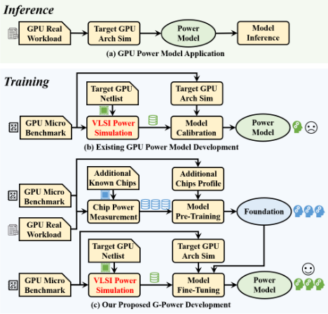
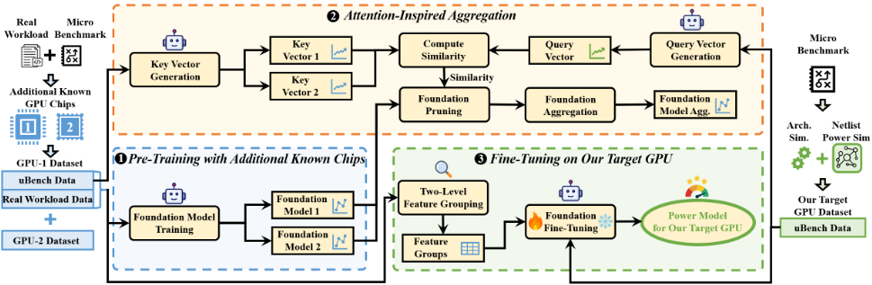
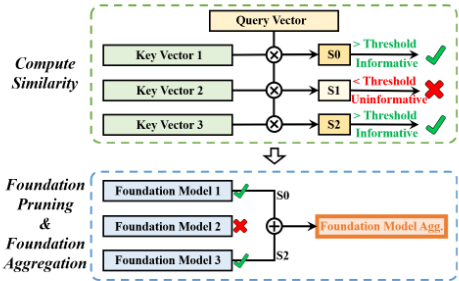
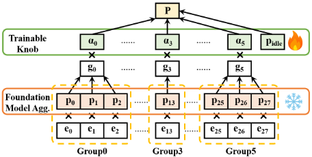
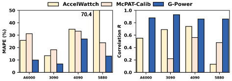
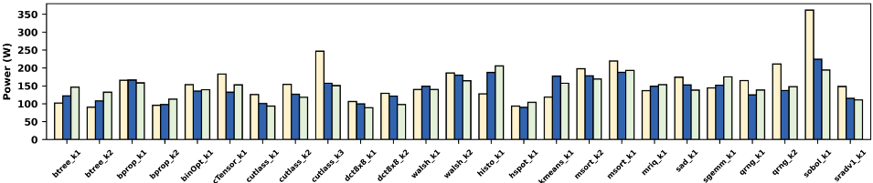
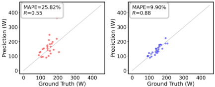
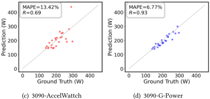
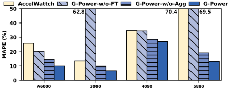

G-Power：基于已知 GPU 聚合知识基础的架构级 GPU 功耗建模
现有架构级 GPU 功耗模型（如 AccelWattch）因功耗标签收集耗时，只能用短小 microbenchmark 校准，导致在 Ampere/Ada 现代 GPU 上 MAPE 超 30%、相关系数 R 低于 0.6。G-Power 利用多个额外已知 GPU 芯片提供附加知识：先对每个已知芯片用 microbenchmark 与真实 workload 预训练线性 foundation model；再以 attention 启发的聚合，用仅由 microbenchmark 训练的 query/key 向量计算 cosine 相似度，剪枝无信息 foundation 后按 softmax 归一化相似度加权融合；最后在目标 GPU 上基于两级特征分组（微架构感知分组 + 数据驱动层次聚类分组）冻结组内参数比例、仅训练各组缩放旋钮完成 fine-tuning。在 RTX A6000/3090/4090/5880 Ada 四款 NVIDIA GPU 上，G-Power 平均 MAPE 为 14%、R 为 0.88，较 AccelWattch MAPE 降低 22%、R 提高 0.36。其'跨已知设计迁移 + 少量校准数据'的建模思路，对本团队构建 IP 架构级功耗/PPA 快速评估模型具有方法借鉴价值。
架构级 GPU 功耗模型（AccelWattch 等）的校准需要目标 GPU 的功耗标签，而标准功耗仿真流程需经 RTL 仿真、逻辑综合、物理设计与功耗仿真，非常耗时；因此现有模型仅用数百条指令的短 microbenchmark 校准，其特征与标签的数据分布和长而复杂的真实 workload 不同，导致在 Ampere/Ada 现代 GPU 上 MAPE 超 30%、相关系数 R 低于 0.6，无法用于指导 GPU 功耗优化。
将 GPU 功耗建模为 28 个架构事件（覆盖 SM、NoC & L2 Cache、global memory 三个域）按执行时间归一化计数的线性函数，并提出三阶段算法：1) 对每个额外已知 GPU 芯片，用其 microbenchmark + 真实 workload 数据做线性回归预训练 foundation model；2) attention 启发聚合——query（目标 GPU）与 key（已知芯片）向量均仅用 microbenchmark 数据训练以保证分布对齐，按 cosine 相似度与预设阈值区分 informative/uninformative foundation，剪枝后以 softmax 归一化相似度加权平均生成聚合 foundation；3) 在目标 GPU 上 fine-tuning——采用两级特征分组（微架构感知的三域粗分组 + 数据驱动的层次聚类细分组），冻结各组内参数比例，仅训练每组可训练旋钮 α_j 与截距。功耗标签通过 NVML/nvidia-smi 在真实芯片实测（锁频、预热至 65°C、每 kernel 测 5 次取均值），架构事件由 NVIDIA Nsight Compute 硬件计数器采集。
在 RTX A6000、RTX 3090、RTX 4090、RTX 5880 Ada 四款 NVIDIA GPU（Ampere/Ada 架构）上，G-Power 平均 MAPE 为 14%、相关系数 R 为 0.88
相比 AccelWattch，MAPE 降低 22%、R 提高 0.36；相比 McPAT-Calib（XGBoost），MAPE 降低 13%、R 提高 0.57
基线 AccelWattch 在所评估的现代 GPU 上精度不足（引言实测 MAPE 超 30%、R 低于 0.6）；McPAT-Calib 在 microbenchmark 训练集上拟合良好但存在过拟合问题，相关系数 R 显著偏低
消融实验表明：去掉 fine-tuning（G-Power-w/o-FT）精度明显下降，fine-tuning 对 G-Power 至关重要；去掉 attention 聚合、直接选择单一 foundation（G-Power-w/o-Agg）只能取得次优精度
与 AccelWattch/GPUWattch 等仅用目标 GPU 自身 microbenchmark 做线性校准、以及 McPAT-Calib 等仅在 microbenchmark 上训练 ML 模型的现有流程不同，G-Power 引入多个额外已知 GPU 芯片（同时含 microbenchmark 与真实 workload 功耗数据）作为知识来源，通过'预训练 foundation—attention 启发相似度聚合—基于特征分组冻结参数比例的受限 fine-tuning'三阶段框架实现跨芯片功耗知识迁移；其中 key/query 向量均只用 microbenchmark 训练以对齐分布、foundation 剪枝与 softmax 相似度加权，是针对'GPU 之间相似但有差异'这一特点的针对性设计。
相关度级别：medium
命中能力域：2.1 IP 架构与微架构 | 2.3 时序与物理实现
理由：论文对象是 NVIDIA GPU 整芯片的架构级功耗建模，并非团队的内存/互连 IP 设计本身，因此不构成对团队能力域的直接命中；但其痛点与方法与 2.1/2.3 高度相关：IP 功耗评估同样受制于'RTL 仿真—综合—物理设计—功耗仿真'的耗时流程，而论文的'利用多个已知设计预训练 foundation + 在新设计上仅用少量校准数据 fine-tuning'的迁移建模框架、架构事件计数到功耗的线性映射、attention 相似度聚合与特征分组冻结策略，可借鉴用于 LPDDR5X/HBM4/UCIe 等 IP 的架构级功耗快速评估与 workload-driven 建模，分别对应 2.1 的 workload-driven 性能建模/面向 PPA 的架构权衡与 2.3 的 ML 辅助功耗预测。
建议动作：作为方法参考存档
arXiv:2608.06870v1 [cs.AR] 2026年8月7日
Qijun Zhang 1 , Yao Lu 1 , Shang Liu 1 , Mengming Li 1 , Chen Zhang 2 , Dongbo Wang 3 , Zhiyao Xie 1∗
1 香港科技大学， 2 上海交通大学， 3 UniVista {qzhangcs, yludf, sliudx, mengming.li}@connect.ust.hk, chenzhang.sjtu@sjtu.edu.cn, wdb@univista-isg.com eezhiyao@ust.hk
图形处理器（Graphics Processing Unit, GPU）一直是大规模并行计算的关键计算资源。随着芯片复杂度不断提升，功耗效率已成为现代 GPU 的重要设计目标。GPU 功耗优化依赖于快速的功耗评估，因而需要架构级 GPU 功耗模型。然而，由于功耗标签收集非常耗时，现有方法仅采用简单的微基准测试（microbenchmark）进行训练。微基准测试作为训练数据的局限性，导致 AccelWattch 等现有架构级 GPU 功耗模型精度较低。
为了解决微基准测试作为训练数据的局限性，我们提出了 G-Power，一种利用额外的已知 GPU 芯片来提供额外知识的架构级 GPU 功耗建模框架。G-Power 利用来自额外已知 GPU 芯片的聚合知识基础，然后在目标 GPU 上进行微调（fine-tuning）。为了利用额外的已知 GPU 芯片提供知识基础，并捕捉相似性以便将这些基础用于微调，G-Power 采用了一个三阶段算法，包括：1）使用额外已知芯片进行预训练，2）受注意力机制启发的聚合，以及 3）在目标 GPU 上进行微调。我们在四款现代 NVIDIA GPU 上对 G-Power 进行了评估，结果表明其具有很高的精度。G-Power 平均可实现低至 14% 的平均绝对百分比误差（MAPE）和高达 0.88 的相关系数 𝑅，与 AccelWattch 相比，MAPE 降低了 22%，𝑅 提高了 0.36。
· 硬件 → 功耗估计与优化。
功耗模型，机器学习
Qijun Zhang 1 , Yao Lu 1 , Shang Liu 1 , Mengming Li 1 , Chen Zhang 2 , Dongbo Wang 3 , Zhiyao Xie 1 . 2026. G-Power：基于已知GPU聚合知识基础的架构级GPU功耗建模. 载于第63届ACM/IEEE设计自动化会议（DAC '26），2026年7月26日至29日，美国加利福尼亚州长滩. ACM，美国纽约州纽约，7页. https://doi.org/10.1145/ 3770743.3804165
∗ 通讯作者
请使用 nonacm 选项或 ACM Engage 文档类以启用 CC 许可协议
本作品依据知识共享署名 4.0 国际许可协议进行许可。
ACM ISBN 979-8-4007-2254-7/2026/07
© 2026 版权归所有者/作者所有。

图形处理器（GPU）已成为加速机器学习、大数据和科学计算等大规模并行计算的关键计算资源 [6, 9, 22, 25]。随着 GPU 芯片复杂度的不断提升，能效正日益成为现代 GPU 设计中愈发重要的设计目标，即便是 RTX3090 这样的消费级 GPU，其功耗也可高达 350W。GPU 的功耗优化依赖于功耗评估。标准的功耗仿真流程需要依次经过寄存器传输级（RTL）仿真、逻辑综合、物理设计和功耗仿真 [1, 2, 24]。这样的功耗仿真流程十分耗时，因而催生了体系结构级功耗模型。
体系结构级 GPU 功耗模型：AccelWattch [7] 作为 GPUWattch [10] 的更新版本，已被广泛用于
PowerModel：近期的通用 RTL 阶段功耗模型 [8, 27, 28, 36] 消除了对超大规模集成电路（VLSI）流程的依赖，但 RTL 仿真同样耗时得令人难以接受。针对 CPU 也已出现了许多体系结构级功耗模型 [3, 11, 30-35]，而 GPU 模型 [7, 10] 却寥寥无几。GPU [7, 10]。GPU 功耗建模比 CPU 更具挑战性，因为缺乏高质量的开源 GPU 设计，迫使研究人员不得不使用真实的 GPU 芯片来采集功耗标签，而在此过程中没有任何中间数据可用。
https://doi.org/10.1145/3770743.3804165
Qijun Zhang 1 , Yao Lu 1 , Shang Liu 1 , Mengming Li 1 , Chen Zhang 2 , Dongbo Wang 3 , Zhiyao Xie 1
体系结构级的 GPU 功耗建模。如图 1(a) 所示，对于目标 GPU 设计，AccelWattch 针对各工作负载执行体系结构级性能仿真以生成体系结构事件，然后利用这些事件来估计 GPU 功耗。AccelWattch 的开发流程如图 1(b) 所示。对于每个 GPU 设计，AccelWattch 均通过线性回归进行校准。由于功耗标签采集十分耗时，校准仅采用包含数百条指令的短微基准测试。校准完成后，该模型即可通过快速的体系结构仿真来预测拥有数百万条指令的长时间真实工作负载的功耗。然而，我们的测量表明，当将 AccelWattch 应用于 Ampere 和 Ada GPU 时，其平均绝对百分比误差（MAPE）可能超过 30%，而相关系数 𝑅 可能低于 0.6。如此低的精度对于指导 GPU 功耗优化而言是不可接受的。
我们的方案——利用额外已知芯片的数据：为解决上述局限，我们提出了 G-Power，一种架构级 GPU 功耗模型，它借助预训练基础从额外的已知 GPU 芯片中学习。与仅使用目标 GPU 训练的现有 GPU 功耗模型相比，G-Power 利用额外的已知 GPU 芯片来提供额外的知识。图 1(c) 展示了我们所提出的 G-Power 框架的开发流程。G-Power 从多个额外的已知 GPU 芯片中学习，由于真实芯片功耗测量速度快，微基准测试和真实工作负载的数据均可获得。
微基准测试作为训练数据的局限：现有 GPU 功耗模型精度低的原因在于微基准测试作为训练数据的局限：微基准测试在特征和标签上的数据分布与真实工作负载不同。这些微基准测试短小且简单，呈现出与冗长复杂的真实工作负载不同的数据分布，而后者由于针对目标 GPU 的功耗仿真过于耗时而无法用于训练。这种分布差异导致现有 GPU 功耗模型工作流程精度低下。
如何使用额外的已知芯片：我们指出，不同 GPU 之间既存在相似性也存在差异性。相似性体现在整体架构和流水线微架构两方面：1) GPU 采用相似的架构设计范式，包含流式多处理器（SM）、片上网络（NoC）和存储器分区。2) GPU 具有相似的流水线设计，遵循相同的、用于隐藏访存延迟的超线程微架构。然而，GPU 之间也存在差异：1) 不同 GPU 具有不同的、无法获取的硬件配置，例如每级流水线的宽度、处理单元的数量以及缓存配置。2) 不同 GPU 具有不同的微架构设计。例如，warp 调度器、张量核心设计和访存单元在不同 GPU 之间可能有所不同。因此，G-Power 的关键在于利用额外的已知 GPU 芯片提供基础，并捕捉这种相似性，以便将这些基础用于微调。
G-Power 采用三阶段算法：1) 使用额外已知芯片进行预训练。它为每个额外的已知 GPU 芯片构建一个基础模型。该基础模型同时使用微基准测试和真实工作负载进行训练，融合跨程序的全面知识。2) 受注意力机制启发的聚合。这一步骤捕捉相似性。它估计相似性，然后基于该相似性聚合这些基础模型，生成聚合基础。3) 在目标 GPU 上进行微调。它使用来自目标 GPU 的微基准测试数据，为我们的目标 GPU 微调聚合基础。
| Domain | Architectural Event | Architectural Event |
|---|---|---|
| SM Array | Total PTX Instruction | Total SASS Instruction |
| SM Array | Float and Integer Instruction | Fp64 Instruction |
| SM Array | DCache Read Hit | DCache Read Miss |
| SM Array | DCache Write Hit | DCache Write Miss |
| SM Array | Constant Cache Hit | Constant Cache Miss |
| SM Array | Shared Memory Access | Textural Cache Access |
| SM Array | ALU Access | Tensor Core Access |
| SM Array | FMA Access | DFMA Access |
| SM Array | DPU Access | EXU Access |
| SM Array | SM Activity | Warp Activity |
| NoC & L2Cache | L2Cache Read Hit | L2Cache Read Miss |
| NoC & L2Cache | L2Cache Write Hit | L2Cache Write Miss |
| NoC & L2Cache | NoC Request | NoC Response |
| Global Memory | Memory Read | Memory Write |
| Domain | Architectural Event | Architectural Event |
贡献：我们的贡献总结如下。
在 GPU 中，每个组件都有其触发内部电路活动的架构事件。由于同一事件总是触发相同的电路部分，我们可以将 GPU 功耗表述为架构事件的线性函数。将事件数量记为 𝑁，组件 𝑖 的最大功率记为 𝑝𝑖，空闲功耗记为 𝑝𝑖𝑑𝑙𝑒，将以执行时间归一化的第 𝑖 个架构事件记为 𝑒𝑖，则 GPU 功耗由公式 1 表示。
其中架构事件 𝑒𝑖 为模型输入，𝑝𝑖 和 𝑝𝑖𝑑𝑙𝑒 为模型参数。在 G-Power 中，我们采用 28 个架构事件 𝑒𝑖（𝑁 = 28），覆盖 GPU 的重要组件。这些架构事件列于表 1 中。这些事件按 GPU 域进行分类，包括流式多处理器（SMs）、片上网络（NoC）与 L2 缓存，以及全局内存，其中同一域内的组件紧密耦合。
图 2 展示了我们提出的 G-Power 的概览，该方法旨在通过利用额外的已知芯片数据来增强目标 GPU 的功耗建模。G-Power 由三个阶段组成：使用额外的已知芯片进行预训练、受注意力机制启发的聚合，以及在目标 GPU 上进行微调。
G-Power：基于来自已知 GPU 的聚合知识基础的架构级 GPU 功耗建模
00

本节介绍我们在 G-Power 框架中提出的三阶段算法。我们在 3.1 节中描述使用额外已知芯片的预训练，在 3.2 节中描述受注意力机制启发的聚合，在 3.3 节中描述在目标 GPU 上的微调。
该阶段为每个额外的已知 GPU 芯片训练基础模型。如第 2 节所述，G-Power 将 GPU 功耗表述为架构事件的线性函数。因此，我们对每个芯片数据集执行线性回归，以构建每个额外已知芯片的基础模型。每个芯片数据集同时包含微基准测试和真实工作负载的架构事件与功耗标签，从而融入了关于该 GPU 芯片功耗特性的全面知识。
我们提出受注意力机制启发的聚合方法，以捕捉目标 GPU 与每个额外已知 GPU 芯片之间的相似性，从而明智地利用这些基础模型。受注意力机制 [26] 的启发，我们将每个额外已知芯片表示为键向量（key vector），将我们的目标 GPU 表示为查询向量（query vector），然后基于查询向量与键向量所度量的相似性来聚合所有基础模型。
与同时在微基准测试数据和真实负载数据上训练的基础模型不同，键向量和查询向量都仅在微基准测试数据上训练。原因如下：对于我们的目标 GPU，只有微基准测试数据可用，因此查询向量只能用微基准测试数据进行训练。对于键向量而言，它应当是查询向量的等价对应物，因此键向量也仅用微基准测试数据进行训练。否则，微基准测试数据与真实负载数据之间的分布差异将产生一个有偏的向量，使其不再是查询向量的对应物。
Qijun Zhang 1 , Yao Lu 1 , Shang Liu 1 , Mengming Li 1 , Chen Zhang 2 , Dongbo Wang 3 , Zhiyao Xie 1


3.2.2 基础模型剪枝与聚合。在生成键向量和查询向量之后，我们基于查询向量与所有键向量之间计算得到的相似性，聚合来自额外已知 GPU 芯片的所有基础模型。我们首先剪枝所有相似性较低的基础模型，然后以相似性作为权重，对剩余的基础模型进行加权平均来完成聚合。这使 G-Power 能够基于相似性明智地利用基础模型。
其次，利用所识别出的有信息量的基础模型和计算得到的相似性，执行基础模型剪枝与基础模型聚合，以生成最终的聚合基础模型。无信息量的基础模型会被剪枝，因为它们所包含的知识可能没有用处。然后，对所有有信息量的基础模型进行加权平均，以生成最终的聚合基础模型，其中权重是经 softmax 归一化的相似性，类似于注意力机制中的操作。
具体细节如图 3 所示。首先，将查询向量与各键向量进行比较以计算相似性。我们计算目标 GPU 的查询向量与所有额外已知 GPU 芯片的键向量之间的余弦相似性。借助一个预定义的阈值，根据相似性是否大于该阈值，将这些基础模型分类为有信息量的基础模型 [12] 和无信息量的基础模型。有信息量的基础模型是指相似性较高的基础模型，这表明该额外已知 GPU 与我们的目标 GPU 相似，因此其基础模型中的知识很可能有用。相反，无信息量的基础模型是指相似性较低的基础模型，此时该额外已知 GPU 与我们的目标 GPU 不同，其知识可能对我们的目标 GPU 没有用处。
在聚合基础模型生成之后，基于我们目标 GPU 的数据集对该基础模型进行微调，从而为我们的目标 GPU 设计构建最终的 GPU 功耗模型。微调基于特征分组，同一组内的体系结构事件在微体系结构层面和数据分布层面均紧密耦合。
3.3.1 基础模型微调。我们基于特征分组在目标 GPU 上对聚合基础模型进行微调，该特征分组将在 3.3.2 节中介绍。同一组内的参数应当以协同的方式更新，因为它们紧密耦合。因此，在基础模型微调期间，我们冻结每组内各参数之间的比例。
图 4 展示了基础模型微调的细节。与原始线性模型将 𝑒 𝑖 与 𝑝 𝑖 相乘并与截距求和不同，基础模型微调为每个特征组引入一个可训练旋钮，在图 4 中记为 𝛼 𝑗。具体而言，每个特征组内的 𝑒 𝑖 ∗ 𝑝 𝑖 被求和为 𝑔 𝑗，随后 𝑔 𝑗 与 𝛼 𝑗 相乘，最后与截距 𝑝 idle 相加得到最终功耗。在微调过程中，基础模型被冻结，只有可训练旋钮可以被更新。在我们的实现中，我们首先计算每个特征组的 𝑔 𝑗，并构成一个由 𝑔 𝑗 组成的向量。然后，将这个新向量作为线性回归的特征，其中训练得到的系数为 𝛼 𝑗，截距为 𝑝 idle。微调完成后，将这些可训练旋钮与原始基础模型相乘，得到最终的 GPU 功耗模型。
3.3.2 两级特征分组。执行两级特征分组是为了将特征划分为多个组，以辅助设计微调中的参数冻结。我们提出了一种同时包含微体系结构感知分组和数据驱动分组的两级特征分组方法。
数据驱动分组将 SM 阵列域内的 20 个特征进一步划分为更细的粒度。我们将某一特征在所有样本中的取值视为该特征对应的向量，并将该向量归一化为单位向量。然后，执行层次聚类——该方法适用于样本较少的高维数据——将特征划分为多个组。其核心思想在于：数据驱动分组识别的是在各程序和各 GPU 上具有相似变化趋势的特征，而不考虑每个事件的绝对值。
微架构感知分组在粗粒度上对特征进行划分，并考虑了特征之间的微架构耦合关系。我们将这些特征（即架构事件）按领域划分为三组。如表1所列，这28个架构事件属于三个领域，包括SM阵列、NoC与L2Cache以及全局内存。其背后的洞察是，同一领域内的微架构是紧密耦合的，因此这些架构事件也是相互耦合的，进而被认为在不同GPU之间具有相似的变化趋势。
G-Power：基于已知GPU聚合知识基础的架构级GPU功耗建模
| GPU | Tech Node | SM Frequency | Memory Frequency |
|---|---|---|---|
| NVIDIA RTX A6000 | 8nm | 1410MHz | 2000MHz |
| NVIDIA RTX 3090 | 8nm | 1395MHz | 1219MHz |
| NVIDIA RTX 4090 | 5nm | 2235MHz | 1313MHz |
| NVIDIA RTX 5880 Ada | 5nm | 975MHz | 2250MHz |
| GPU | Tech Node | SM Frequency | Memory Frequency |
| Kernel Name | Source Benchmark | Kernel Name | Source Benchmark |
|---|---|---|---|
| CUDA Samples 11.0 | CUDA Samples 11.0 | CUDA Samples 11.0 | CUDA Samples 11.0 |
| cTensor_K1 | cudaTensorCoreGemm | dct_K1 | dct8x8 |
| binOpt_K1 | binomialOptions | dct_K2 | dct8x8 |
| walsh_K1 | fastWalshTransform | histo_K1 | histogram |
| walsh_K2 | fastWalshTransform | msort_K1 | mergesort |
| qrng_K1 | quasirandomGenerator | msort_K2 | mergesort |
| qrng_K2 | quasirandomGenerator | sobol_K1 | SobolQRNG |
| Rodinia 3.1 | Rodinia 3.1 | Rodinia 3.1 | Rodinia 3.1 |
| bprop_K1 | backprop | hsopt_K1 | hotspot |
| bprop_K2 | backprop | sradv1_K1 | sradv1 |
| btree_K1 | b+tree | kmeans_K1 | kmeans |
| btree_K2 | b+tree | ||
| CUTLASS 1.3 (cutlass-wmma) | CUTLASS 1.3 (cutlass-wmma) | Parboil | Parboil |
| cutlass_K1 | input: 2560x16x2560 | sgemm_K1 | sgemm |
| cutlass_K2 | input: 4096x128x4096 | mriq_K1 | mri-q |
| cutlass_K3 | input: 2560x512x2560 | sad_K1 | sad |
| Kernel Name | Source Benchmark | Kernel Name | Source Benchmark |
我们选用四款基于Ampere和Ada Lovelace架构的现代NVIDIA GPU：RTX A6000 [18]、RTX 3090 [17]、RTX 4090 [20]以及RTX 5880 Ada [21]，如表2所列。这65个微基准测试来自AccelWattch [7]。真实工作负载包括CUDA Samples 11.0 [16]、Rodinia 3.1 [4]、CUTLASS 1.3 [14]和Parboil [23]。我们进行内核级评估，将包含多个内核的基准测试拆分为相互独立的内核（表3）。
为了收集功耗标签，我们对真实GPU芯片的功耗进行测量。在测量过程中，我们使用了NVIDIA管理库（NVML）[15]和NVIDIA系统管理接口（nvidiasmi）[13]。具体而言，我们在功耗测量之前先使用nvidia-smi锁定SM和显存的频率，然后运行基于NVML的监控程序，在内核执行期间对功耗进行采样。与AccelWattch类似，我们在正式功耗测量之前，先使用高功耗程序将GPU加热至65°C。每个内核我们执行5次，并取平均值作为评估中的最终功耗标签。
为了收集架构事件，我们使用了NVIDIA Nsight Compute [19]。它借助硬件计数器测量内核在真实GPU芯片上运行时的真实执行统计信息。这种精确的架构事件测量消除了架构性能模拟器不准确性带来的干扰，确保评估聚焦于功耗层面。我们实验中采用的架构事件列于表1，包括覆盖不同组件的28个事件。
我们采用两项具有代表性的现有工作作为对比基线。1) AccelWattch [7] 是最先进的架构级 GPU 功耗模型，它是 GPUWattch

[10] 的更新版本。该模型被构建为一种解析式功耗模型，对每个组件分别进行功耗计算，类似于 McPAT [11]。在预测之前需要进行一个采用线性函数的校准过程，即在新目标 GPU 的 GPU 微基准测试上训练该模型。2) McPAT-Calib [29] 是一个具有代表性的架构级 CPU 功耗模型，我们将其推广到 GPU 上。它通过构建机器学习模型来进行功耗建模。在我们的评估中，McPAT-Calib 在新目标 GPU 的 GPU 微基准测试上进行训练。所采用的机器学习模型是 XGBoost [5]，即 McPAT-Calib 中声称的最佳模型。
其他近期的架构级 CPU 功耗模型，例如 PANDA [32]、FirePower [30] 和 AutoPower [35]，未被纳入我们的评估，因为这些工作是针对 CPU 定制的，无法推广到 GPU 功耗建模。
为反映真实场景，我们选取一个 GPU 作为目标，其余三个作为额外的已知芯片，从而形成四种测试场景（A6000、3090、4090 和 5880）。这三个额外的 GPU 提供同时包含微基准测试和真实工作负载的预训练数据。目标 GPU 使用微基准测试进行微调，并使用真实工作负载进行测试。基线（Baseline）则采用所选 GPU，使用 GPU 微基准测试进行训练，并使用真实 GPU 工作负载进行测试，以保证公平比较。
图 5 展示了我们所提出的 G-Power 与两个基线在四种测试场景中的精度对比。精度以平均绝对百分比误差（MAPE）和相关系数 𝑅 来衡量。结果表明，我们所提出的 G-Power 在所有测试场景中都能显著优于所有基线。定量而言，G-Power 平均可实现低至 14% 的 MAPE 和高达 0.88 的相关系数 𝑅。该 MAPE 分别比 AccelWattch 和 McPAT-Calib 低 22% 和 13%。相关系数 𝑅 分别比我们的两个基线高 0.36 和 0.57。G-Power 相对于所有基线的优越性能证明了利用来自额外已知 GPU 芯片的知识这一方法的有效性。
对于最先进的架构级 GPU 功耗模型 AccelWattch 而言，其在所评估的四种现代 GPU 设计上的预测并不准确。AccelWattch 的不准确源于训练数据有限，以及用于训练的 GPU 微基准测试与用于测试的真实 GPU 工作负载之间的数据分布差异。凭借整合了来自多个额外已知 GPU 芯片的知识并对全面程序进行了测量的基础，我们所提出的 G-Power 能够解决这一数据局限，显著提升预测精度。
Qijun Zhang 1 , Yao Lu 1 , Shang Liu 1 , Mengming Li 1 , Chen Zhang 2 , Dongbo Wang 3 , Zhiyao Xie 1
AccelWattch G-Power 标签


(a) A6000-AccelWattch
(b) A6000-G-Power


图 6 展示了 AccelWattch 和 G-Power 针对 RTX A6000 的功耗预测与功耗标签的详细对比。结果表明，在我们所评估的所有真实 GPU 工作负载上，G-Power 都能始终取得高于 AccelWattch 的精度。图 7 使用 AccelWattch 和 G-Power 两种模型可视化了 RTX A6000 和 3090 的功耗预测。图中每个点代表对一个真实 GPU 工作负载的预测，灰色线表示准确预测。该可视化显示，G-Power 的预测接近灰色线，而 AccelWattch 的预测则远离该线，表明我们所提出的 G-Power 具有优势。这也表明 AccelWattch 预测的相关系数极低，反映出其无法准确区分不同工作负载的功耗特性。相比之下，G-Power 实现了高相关系数，能够正确识别不同工作负载的功耗行为。
对于基于机器学习（ML）的功耗模型 McPAT-Calib 而言，其预测同样不准确，尤其是相关系数 𝑅。我们观察到，该算法在包含 GPU 微基准测试的训练数据集上拟合良好。这表明 McPAT-Calib 存在过拟合问题。过拟合使得 McPAT-Calib 能够在与训练数据相似的合理范围内做出预测，但其相对值却显著不准确，表现为较低的相关系数 𝑅。
除上述两个基线外，我们还纳入了两种由 G-Power 衍生的方法进行消融研究：1) G-Powerw/o-FT。该方法不执行微调，直接采用聚合后的基础模型作为最终功耗模型。2) G-Powerw/o-Agg。该方法不执行受注意力机制启发的聚合，直接选择某一个基础模型进行微调。
图 8 展示了我们的消融研究结果，证明了微调和受注意力机制启发的聚合二者的关键性。G-Power-w/o-FT 与 G-Power 的对比表明，微调对 G-Power 至关重要。这是因为尽管不同 GPU 设计在功耗行为上存在相似性，但资源数量不同，微架构设计上也存在差异。G-Powerw/o-Agg 与 G-Power 的对比表明，直接选择某一个基础模型只能达到次优精度。这是因为某些 GPU 与我们的目标 GPU 存在差异，而受注意力机制启发的聚合能够捕捉这种相似性，从而明智地利用基础模型。
我们提出了 G-Power，一种利用来自其他已知 GPU 芯片知识的架构级 GPU 功耗建模框架。G-Power 采用一种三阶段算法，明智地利用其他已知 GPU 芯片提供基础模型，并捕捉相似性以利用这些基础模型进行微调。这种基于基础模型的框架提升了 GPU 功耗建模精度，是 GPU 架构师工具箱中一个极具吸引力的补充。